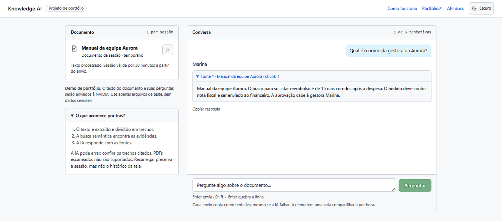

Seu documento, suas perguntas, respostas com fontes.
Envie um PDF ou DOCX e faça até cinco tentativas de pergunta. Confira os trechos usados na resposta e experimente perguntas que não estão no documento.
Sem cadastro · Documento de exemplo disponível
